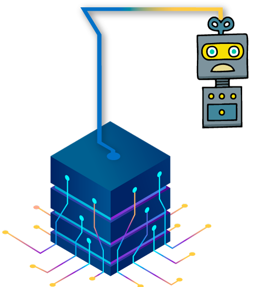
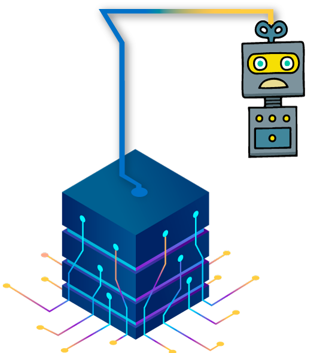

A continuación, se describen los botones de navegación del curso
Esquina superior derecha
 Permite ingresar a la pantalla inicial del curso
Permite ingresar a la pantalla inicial del curso
 Permite desplegar menú de actividades del curso
Permite desplegar menú de actividades del curso
 Permite ingresar al glosario, bibliografía y archivos PDF del curso
Permite ingresar al glosario, bibliografía y archivos PDF del curso
 Permite activar o desactivar el audio del curso
Permite activar o desactivar el audio del curso
Esquina inferior izquierda


Al interior de las actividades de aprendizaje aparece este menú para consultar las demas actividades.
Centro Inferior
Página anterior
Página siguiente
Pausar
Reanudar
CARGA ELÉCTRICA, CLASES DE MATERIALES Y TIPOS DE FUENTES
Bienvenidos a la unidad de contenido
Al desarrollarla conocerá e identificará los diferentes tipos de instrumentos de medida de variables eléctricas, su historia y sus diferentes usos. También reconocerás la importancia de la calibración, los patrones, el margen de error y la adecuada utilización. En la presenta unidad de aprendizaje se abordarán temas de interés sobre las diferentes cargas eléctricas, materiales eléctricos y tipos de fuentes; dando a conocer cuáles son los parámetros más importantes a la hora de realizar la conexión de equipos y elementos eléctricos. Así como, los diferentes montajes de fuentes de alimentación teniendo en cuenta el tipo de fuente, lineal o conmutada, de tensión o de corriente, sin olvidar la simbología utilizada en planos para la representación de las instalaciones eléctricas.
Haga clic en el botón "siguiente" para continuar:
Objetivos
Objetivos:
- Conocer, identificar y analizar las diferentes cargas eléctricas, los diferentes materiales eléctricos y los diferentes tipos de fuentes.
- Reconocer los parámetros más importantes a la hora de realizar la conexión de equipos y elementos eléctricos.
- Interpretar la simbología utilizada en planos para la representación de las instalaciones eléctricas.
Contenido temático:
Contenido temático:
- Carga eléctrica, clases de materiales y tipos de fuente.
- Planos de instalación y sistemas eléctricos.
- Análisis, técnicas e implementación de manuales en equipos.
- Parámetros eléctricos y características técnicas de máquinas.
- Técnicas, manuales de equipos eléctricos y características de los sistemas eléctricos activos y reactivos.
Metodología
Metodología:
Esta unidad se compone de 5 actividades de aprendizaje en las cuales encontrarás una situación a resolver acompañada de una guía de aprendizaje que te orientará en el desarrollo del problema planteado.
Haga clic en el botón "siguiente" para continuar:
Carga eléctrica, clases de materiales y tipos de fuentes
- Identificar las diferentes cargas eléctricas, conociendo los diferentes materiales eléctricos y los diferentes tipos de fuentes.
- Implementar los parámetros correctos a la hora de realizar las conexiones de equipos y elementos eléctricos.
- Implementar diferentes montajes de fuentes de alimentación, con el fin de decidir y escoger el tipo de fuente, lineal o conmutada, de tensión o de corriente correspondan.
- Como se debe elaborar una ficha técnica adecuadamente con todos sus parámetros.
- Identificar la simbología utilizada en planos para la representación de las instalaciones eléctricas, teniendo en cuenta todos los detalles tanto técnicos como documentales relacionados a la instalación eléctrica.
- Tener la mejor actitud y disposición.
- Proponer ideas.
- Poner al servicio de la actividad todas las capacidades y destrezas.
- Hacer propias las habilidades de comprensión lectora.
- Implementar el trabajo multidisciplinario permitiendo fortalecer los planteamientos hechos.
ACTIVIDAD DE APRENDIZAJE 1
Bienvenidos a la actividad de aprendizaje N° 1 “Carga eléctrica, clases de materiales y tipos de fuente". A continuación, se presenta la situación a resolver dentro de esta actividad.
Haga clic en el botón "Siguiente" para continuar:

Profesor: ¡Hola! Bienvenidos a la primera actividad de esta unidad donde abordaremos el tema de carga eléctrica, clases de materiales y tipos de fuente.
Estudiante: Muy bien profesor ¿Y de qué se trata la actividad?

Profesor: En esta actividad conoceremos los conceptos básicos de electricidad, teoría molecular y atómica, los múltiplos y submúltiplos de las unidades de medida y materiales eléctricos.
Estudiante: Comprendo lo que debo realizar profesor, ¿Cuál es la información que necesito para resolver la actividad?
Profesor: La información necesaria para resolver la actividad, la encontrarás en el contendido disponible a continuación. Recuerda descargar y desarrollar la guía de aprendizaje.
Estudiante: ¡Está bien profesor, revisaré la información y resolveré la actividad!
Haga clic en el botón "descargar actividad":

IDENTIFICAR MAGNITUDES ES INSTRUMENTOS DE MEDICIÓN DE ACUERDO CON LOS PARÁMETROS A MEDIR EN EL CIRCUITO ELÉCTRICO.
CONCEPTOS BÁSICOS DE ELECTRICIDAD, TEORÍA MOLECULAR Y ATÓMICA
Se conoce a la carga eléctrica como una propiedad física que tiene como principio el movimiento de los electrones, partículas que, junto a los protones y neutrones, componen los átomos, los cuales a su vez componen la materia. Estos electrones se pueden mover a través de elementos conductores, como por ejemplo un cable que se conecta a una bombilla y generar luz.
Existen fenómenos eléctricos naturales como los rayos, los relámpagos, la luz, el campo magnético terrestre, la inducción electromagnética, etc. Por otro lado, también están los artificiales como la iluminación de los hogares y funcionamiento de electrodomésticos.
Actualmente, la electricidad tiene un sin número de aplicaciones y está presente en sistemas de transporte aéreo, terrestre y marítimo. Además, se usa para adecuar las condiciones climáticas en un espacio. También, para poner en funcionamiento todo un sistema de máquinas eléctricas.
IDENTIFICAR MAGNITUDES ES INSTRUMENTOS DE MEDICIÓN DE ACUERDO CON LOS PARÁMETROS A MEDIR EN EL CIRCUITO ELÉCTRICO.
CONVERSIÓN DE UNIDADES DE MÚLTIPLOS A SUBMÚLTIPLOS DE LAS DIFERENTES UNIDADES DEL SISTEMA INTERNACIONAL Y VICEVERSA
El sistema internacional de medidas está conformado por siete unidades básicas correspondientes a siete magnitudes físicas fundamentales.
Longitud: es la distancia lineal entre dos puntos.
Masa: cantidad de materia de un cuerpo.
Tiempo: duración de los acontecimientos.
Temperatura: expresa el grado de calor de los cuerpos o del ambiente.
Intensidad de corriente eléctrica: es la cantidad de carga eléctrica que pasa por un circuito eléctrico.
Intensidad luminosa: es la cantidad de flujo luminoso o potencia luminosa sobre un punto.
Cantidad de sustancia: unidad que indica la cantidad de partículas químicas.
IDENTIFICAR MAGNITUDES ES INSTRUMENTOS DE MEDICIÓN DE ACUERDO CON LOS PARÁMETROS A MEDIR EN EL CIRCUITO ELÉCTRICO.
CONOCIMIENTOS SOBRE CLASES DE MATERIALES CONDUCTORES, SEMICONDUCTORES, AISLANTES Y FACTORES QUE DETERMINAN LA RESISTENCIA
El flujo de cargas eléctricas se da a través de materiales, pero su facilidad para hacerlo lo determina una propiedad que se denomina conductividad. Una propiedad inversa es la resistividad, que se entiende como la resistencia eléctrica del material al paso de corriente.
Los materiales según su conductividad se clasifican en dos grupos:
IDENTIFICAR MAGNITUDES ES INSTRUMENTOS DE MEDICIÓN DE ACUERDO CON LOS PARÁMETROS A MEDIR EN EL CIRCUITO ELÉCTRICO.
CONOCIMIENTOS SOBRE CLASES DE MATERIALES CONDUCTORES, SEMICONDUCTORES, AISLANTES Y FACTORES QUE DETERMINAN LA RESISTENCIA
Además de los mencionados, existe un material que tiene un comportamiento intermedio y son los llamados semiconductores. Estos son materiales que por algunas propiedades (campo eléctrico, radiación, presión, temperatura ambiente) se comportan en algunos casos como conductores y en otros como aislantes. Ejemplo: germanio, silicio. Algunos son usados para la fabricación de dispositivos electrónicos para sistemas de control.
La resistencia eléctrica se representa en Ohm (Ω) y así se relacionan los factores que afectan la capacidad de resistencia de un conductor:
R = ρ * (L/A)
Donde:
R=Resistencia.
ρ=Coeficiente de resistividad.
L=Longitud.
A=Área.
Longitud: según la relación anterior, la resistencia es directamente proporcional a su longitud, lo que quiere decir que, a mayor longitud, mayor resistencia.
Ejercicio de aprendizaje

SOPA DE LETRAS
Ubique las palabras de la lección anterior
Palabras a buscar:
Actividad de aprendizaje 2
Bienvenidos a la actividad de aprendizaje N° 2 “Planos de instalaciones y sistemas eléctricos". A continuación, se presenta la situación a resolver dentro de esta actividad.
Haga clic en el botón "Siguiente":
Profesor: ¡Hola! Bienvenidos a la segunda actividad de esta unidad donde abordaremos el tema “Planos de instalaciones y sistemas eléctricos".
Estudiante: Muy bien profesor ¿Y de qué se trata la actividad?
Profesor: Conoceremos los tipos y características de las fuentes eléctricas, la interpretación de planos de instalaciones y las pruebas y ensayos más comunes que se realizan en sistemas elétricos.
Estudiante: Comprendo lo que debo realizar profesor, ¿Cuál es la información que necesito para resolver la actividad?
Profesor: La información necesaria para resolver la actividad, la encontrarás en el contendido disponible a continuación. Recuerda descargar y desarrollar la guía de aprendizaje.
Estudiante: ¡Está bien profesor, revisaré la información y resolveré la actividad!
Haga clic en el botón "descargar actividad":
VERIFICAR LA CONFIGURACIÓN Y CONEXIÓN DEL SISTEMA A TRAVÉS DE LA DOCUMENTACIÓN TÉCNICA, MANUALES DE PROCEDIMIENTO, MANUALES DE FABRICACIÓN Y LOS PLANOS DE CONEXIÓN
CARACTERÍSTICAS DE TIPOS DE FUENTES, DEPENDIENTES E INDEPENDIENTES, SEGÚN LA CLASE DE CORRIENTE: CONTINUA O ALTERNA, DE ACUERDO CON EL NÚMERO DE FASES: MONOFÁSICA, BIFÁSICA Y TRIFÁSICA, YA SEA FIJA O VARIABLE
Las fuentes de alimentación son aquellas que entregan energía al sistema, por lo tanto, son conocidas como elementos activos en el circuito.
Se clasifican así:
Según el parámetro regulado
Fuentes de voltaje: generan un voltaje entre sus dos terminales permitiendo que los electrones fluyan a través de un circuito, su unidad voltio (V).
Fuentes de corriente: entregan una corriente constante entre sus terminales, su unidad el amperio (A).
Según el rango de salida
Fuente fija: proporciona uno o pocos valores discretos como: +12V.
Fuente variable: el voltaje de la salida puede variar en un rango como:
-12V a 12V.
Otras clasificaciones:
Haga clic en cada botón para ampliar la información:
Fuentes dependientes e independientes
VERIFICAR LA CONFIGURACIÓN Y CONEXIÓN DEL SISTEMA A TRAVÉS DE LA DOCUMENTACIÓN TÉCNICA, MANUALES DE PROCEDIMIENTO, MANUALES DE FABRICACIÓN Y LOS PLANOS DE CONEXIÓN
TÉCNICAS PARA LA INTERPRETACIÓN DE SÍMBOLOS Y ESQUEMAS DE CONEXIÓN
Un sistema eléctrico está conformado por dos o más componentes que se encuentran interconectados para transportar corriente eléctrica. De acuerdo a esto, las representaciones gráficas de dicho sistema eléctrico se hacen necesarias para poder interpretar mejor la instalación y el funcionamiento de manera esquematizada.
Los símbolos son la interpretación por medio de dibujos de los elementos eléctricos o accesorios necesarios para realizar una instalación y el reconocimiento de ellos facilita el entendimiento de un esquema de conexión. Los símbolos deben estar descritos o referenciados en un listado en el plano.
A continuación, se muestran algunos símbolos empleados que son utilizados para la esquematización de los sistemas eléctricos:
Símbolos eléctricos principales
Se debe tener en cuenta que, en muchas ocasiones, cada operador de red tiene sus propios símbolos y requerimientos establecidos en cuanto a la presentación de esquemas o planos de un sistema eléctrico.
El esquema normalmente usado es el diagrama unifilar porque suministra información del circuito representado por una sola línea que incluye todos los conductores y muestra cómo se distribuye la fuente, luego la acometida y finalmente la carga. Los conductores que transportan corriente (fases), el neutro y la tierra se representan en los esquemas de la siguiente manera:
Existen otros esquemas no tan comúnmente usados, los cuales son:
Esquema funcional: muestra el esquema de conexión y de control del sistema eléctrico de una manera sencilla y sin mucho detalle.
Esquema multifilar: son los esquemas que representan todos los elementos correspondientes a las distintas fases o conductores mostrando la conexión real del circuito.
Esquema topográfico: Muestra información de colocación de equipos, trazado de canalizaciones o cables, desde una perspectiva frontal.
VERIFICAR LA CONFIGURACIÓN Y CONEXIÓN DEL SISTEMA A TRAVÉS DE LA DOCUMENTACIÓN TÉCNICA, MANUALES DE PROCEDIMIENTO, MANUALES DE FABRICACIÓN Y LOS PLANOS DE CONEXIÓN
CONOCIMIENTOS SOBRE SWITCHES, INTERRUPTORES MANUALES Y SUS CAPACIDADES NOMINALES
Los switches o interruptores manuales son aparatos eléctricos que funcionan con energía eléctrica y su función principal es interrumpir el flujo de corriente eléctrica hacia un aparato o equipo que funcione con electricidad y esté conectado a dicho interruptor manual.
Las partes más importantes de un interruptor manual son:
- Actuantes: son los encargados de restringir el paso del flujo eléctrico mediante apertura o cierre del contacto eléctrico.
- Pulsadores: es el encargado de activar o desactivar el actuante.
- Cantidad de polos: se refiere a la cantidad de salidas eléctricas distintas a las cuales se les puede interrumpir el flujo de energía desde el interruptor.
- Cantidad de vías: se refiere a las aplicaciones que puede tener el interruptor. Usualmente se utiliza una sola vía (abrir y cerrar el circuito)
CONOCIMIENTOS SOBRE SWITCHES, INTERRUPTORES MANUALES Y SUS CAPACIDADES NOMINALES
Dentro de los interruptores manuales más comunes, encontramos las siguientes clasificaciones:
- Interruptor manual sencillo: solo tiene un pulsador.
- Interruptor manual doble: tiene dos pulsadores.
- Interruptor manual triple: tiene tres pulsadores.
- Interruptor manual conmutable: se controla desde dos puntos.
A continuación, se muestra un esquema típico de la conexión de un interruptor manual. El cable azul representa el conductor neutro (No hay flujo de corriente eléctrica) y este va directo al aparato eléctrico; el cable marrón es la fase o el conductor que transporta el flujo de corriente y este llega hasta el interruptor manual donde se realiza el corte o flujo de corriente.
CONOCIMIENTOS SOBRE SWITCHES, INTERRUPTORES MANUALES Y SUS CAPACIDADES NOMINALES
Finalmente, desde el interruptor manual, se deriva con el mismo cable marrón llamado Retorno, hasta el aparato eléctrico a controlar por medio del interruptor.
El cable verde con amarillo es el cable de puesta a tierra, el cual debe ir acompañando tanto el interruptor manual como el aparato eléctrico. Este cable es el que brinda la seguridad de la instalación y de las personas.
CONOCIMIENTOS SOBRE SWITCHES, INTERRUPTORES MANUALES, SUS CAPACIDADES NOMINALES
Montaje de un switch o interruptor manual: Existen diversas aplicaciones de los interruptores manuales, entre ellas encontramos el uso más común que es para el encendido y apagado de un bombillo, bien sea en unidades residenciales, comerciales, industriales o especiales. Para este tipo de aplicaciones, el montaje de los interruptores manuales se realiza de manera empotrada o de manera sobrepuesta en una superficie vertical u horizontal, con una altura promedio de 1,20 metros.
La ubicación de estos aparatos debe ser en un punto visible y en puntos donde se requiera que el aparato este al acceso o a la mano.
También existen aplicaciones especiales tales como control de encendido de motores, fuentes de agua, entre otros.
Los interruptores manuales tienen una capacidad de corriente máxima de fábrica, lo que quiere decir que, según la capacidad para la que están hechos, estos solo soportaran cierta cantidad de elementos eléctricos conectados al él.
Existen diversos tipos de interruptores manuales en el mercado, para lo cual se debe tener muy en cuenta el tipo de aplicación y la cantidad de carga eléctrica a conectarle al interruptor para evitar sobrecorrientes y daños en la instalación.
En la actualidad existe un estándar para la capacidad nominal de los interruptores, ya que según la norma IEC 60898-1 establece que en los circuitos de baja tensión como viviendas o pequeñas oficinas. El estándar establece que la corriente nominal máxima sea de 125A, mientras que la más baja sea de 6A.
RECONOCIMIENTO DE MATERIALES, HERRAMIENTAS Y EQUIPOS PARA LAS PRUEBAS Y ENSAYOS
Haga clic en cada botón para ampliar la información:
Ahorcado


 



_________
Intentos restantes: 6
Actividad de aprendizaje 3
Bienvenidos a la actividad de aprendizaje N° 3 “Análisis y técnicas de implementación de manuales en equipos". A continuación, se presenta la situación a resolver dentro de esta actividad.
Haga clic en el botón "Siguiente":
Profesor: ¡Hola! Bienvenidos a la actividad donde abordaremos el tema de análisis, técnicas de implementación de manuales en equipos.
Estudiante: Muy bien profesor ¿Y de qué se trata la actividad?
Profesor: En esta actividad veremos la características y funcionamiento de las máquinas eléctricas.
Estudiante: Comprendo lo que debo realizar profesor, ¿Cuál es la información que necesito para resolver la actividad?
Profesor: La información necesaria para resolver la actividad, la encontrarás en el contendido disponible a continuación. Recuerda descargar y desarrollar la guía de aprendizaje.
Estudiante: ¡Está bien profesor, revisaré la información y resolveré la actividad!
Haga clic en el botón "descargar actividad":
Revisar y analizar la documentación técnica, manuales de procedimiento y de fabricación de los equipos para la identificación, a través de la conexión de los mismos del sistema, seleccionar los elementos para el sistema polifásico, por medio de manuales de fabricantes y determinar tipos de carga a instalar mediante estudio de las características técnicas de la máquina, cálculos e interpretación de manuales.
Haga clic en cada botón para ampliar la información:
PROCEDIMIENTO PARA ESTABLECER EL ÁNGULO DE FASE
¿Qué es el ángulo de fase?
Un ángulo de fase es la diferencia que hay entre dos ondas senoidales, esto sucede cuando en el circuito hay capacitores que se refiere a los condensadores o hay inductores que se refiere a las bobinas, gracias a estos componentes se forma un desplazamiento angular entre la forma de la onda de la tensión y de la corriente, medida en grados o radianes.
Es importante porque radica en que se puede elegir en qué condiciones un sistema oscilatorio (o una onda) debe iniciar su movimiento.
Elementos resistivos: son elementos que consumen energía y presentan resistencia pura y se les llama receptores R.
Elementos Inductivos: son aquellos elementos que consumen una energía extra a la adicional que requieren para funcionar. Tienen solamente un componente inductivo puro (bobina) y se les llama receptores L.
Elementos Capacitivos: son aquellos elementos que almacenan energía, pero no la consumen (Condensadores). A estos se les llama receptores C.
Potencia activa 'P' (Watts W): es la cantidad de energía útil que consume un equipo eléctrico, esto quiere decir que la potencia en Watts es la realmente utilizada para realizar el trabajo.
Potencia aparente 'S' (Voltio-Amperios VA): es la cantidad total de energía que requieren los equipos eléctricos, pero no es la realmente utilizada, debido que las bobinas y condensadores pueden requerir un consumo adicional para su funcionamiento.
Potencia Reactiva (Voltio-Amperios-Reactivos VAR): es la cantidad de energía que requieren los componentes inductivos y capacitivos para generar el principio de funcionamiento de estos elementos, crear campos magnéticos y eléctricos para una aplicación definida. Dicha energía no se convierte en útil.
De acuerdo a lo anterior, para determinar el ángulo de fase, se utiliza el triángulo de potencias, ya que, conociendo sus valores, se puede proceder a realizar el cálculo del ángulo de fase:
Donde:
S: potencia Aparente, P: potencia Activa y jQ: potencia reactiva
Conociendo los valores de las potencias, podemos encontrar el ángulo de fase por medio de una relación trigonométrica así:
ϕ=Arcocoseno (P/S)
ϕ=Arcoseno (Q/S)
ϕ=Arcotangente (Q/P)
Si tenemos una instalación con S=50VA, P=40W, entonces el ángulo de fase sería:
ϕ=Arcocoseno (P/S)
ϕ=Arcocoseno (40/50) = 36,86° -> Ángulo de fase
PROCEDIMIENTO PARA ESTABLECER EL ÁNGULO DE FASE
PROCEDIMIENTOS TÉCNICOS PARA EL ANÁLISIS DE LA DOCUMENTACIÓN:
La documentación como mínimo que se requiere para un proyecto eléctrico o la instalación de algún elemento o equipo es la siguiente:
De clic en los recuadros para accedera más información:
1) Memorias de cálculo: es una parte del diseño eléctrico que contiene los datos y cálculos eléctricos según el tipo de instalación.
2) Planos: son los que muestra la parte gráfica y esquemática de la instalación eléctrica. La información más importante que se debe visualizar en los planos eléctricos es:
3) Manuales técnicos de los elementos y equipos a instalar.
Ejercicio de aprendizaje
Secuencia Lógica
Escribe en el recuadro el nombre correcto del concepto:
Es el tipo de generación más usado y este sistema se compone por una máquina eléctrica que tiene como principio de funcionamiento generar un campo magnético giratorio e inducir o crear tensiones en unas bobinas.
Está conformado básicamente por un circuito magnético y dos circuitos eléctricos, los cuales se complementan con el estator y el rotor.
Son los que muestra la parte gráfica y esquemática de la instalación eléctrica. La información más importante que se debe visualizar en los planos eléctricos es
Actividad de aprendizaje 4
Bienvenidos a la actividad de aprendizaje N° 4 “Parámetros eléctricos y características técnicas de máquinas". A continuación, se presenta la situación a resolver dentro de esta actividad.
haga clic en el botón "Siguiente":
Profesor: ¡Hola! Bienvenidos a la cuarta actividad de esta unidad donde abordaremos el tema de parámetros eléctricos y características técnicas de máquinas.
Estudiante: Muy bien profesor ¿Y de qué se trata la actividad?
Profesor: En esta actividad reconoceremos los parámetros elétricos de una instalación de acuerdo con las necesidades requeridas, las diferentes ramas de los sistemas eléctricos y las características de las máquinas, equipos eléctricos y las fallas más comunes.
Estudiante: Comprendo lo que debo realizar profesor, ¿Cuál es la información que necesito para resolver la actividad?
Profesor: La información necesaria para resolver la actividad, la encontrarás en el contendido disponible a continuación. Recuerda descargar y desarrollar la guía de aprendizaje.
Estudiante: ¡Está bien profesor, revisaré la información y resolveré la actividad!
Haga clic en el botón "descargar actividad":
Calcular parámetros eléctricos de tensión, corriente, ángulo de fase, potencia, energía y régimen asimétrico, identificar e interpretar el sistema polifásico con base en los parámetros característicos y la conexión y formular el proyecto de una instalación eléctrica industrial de acuerdo con los requerimientos del cliente (necesidades, manuales y normas técnicas).
De clic en cada botón
Ejercicio de aprendizaje
EMPAREJAMIENTO
Arrastre los elementos que considere hacen parte de las necesidades, manuales y normas técnicas, de la columna izquierda hacia la derecha :
Actividad de aprendizaje 5
Bienvenidos a la actividad de aprendizaje N° 5 “Técnicas, manuales de equipos eléctricos y características de los sistemas eléctricos activos y reactivos". A continuación, se presenta la situación a resolver dentro de esta actividad.
Haga clic en el botón "Siguiente":
Profesor: ¡Hola! Bienvenidos a la actividad donde abordaremos el tema de técnicas, manuales de equipos eléctricos y características de los sistemas eléctricos activos y reactivos.
Estudiante: Muy bien profesor ¿Y de qué se trata la actividad?
Profesor: Conoceremos las técnicas utilizadas en el montaje, instalación y conexión de equipos eléctricos, los manuales otorgados por los fabricantes y las características de los sistemas eléctricos activos y reactivos.
Estudiante: Comprendo lo que debo realizar profesor, ¿Cuál es la información que necesito para resolver la actividad?
Profesor: La información necesaria para resolver la actividad, la encontrarás en el contendido disponible a continuación. Recuerda descargar y desarrollar la guía de aprendizaje.
Estudiante: ¡Está bien profesor, revisaré la información y resolveré la actividad!
Haga clic en el botón "descargar actividad":
técnicas utilizadas en el montaje, instalación y conexión de equipos eléctricos, los manuales otorgados por los fabricantes y las características de los sistemas eléctricos activos y reactivos
Montar los elementos para el sistema polifásico, de acuerdo al diseño realizado y utilizando manuales y normas de seguridad, identificar e interpretar el sistema polifásico con base en los parámetros característicos y la conexión, realizar el montaje, instalación y conexión de equipos y componentes eléctricos, calcular los parámetros eléctricos, usando principios y leyes de electricidad y definir las características de funcionamiento de equipos y componentes eléctricos para su montaje, instalación y conexión.
De clic en cada botón para ampliar la información
Ejercicio de aprendizaje
FALSO/VERDADERO
Seleccione falso o verdadero según consideres es la correcta
A la hora de realizar la conexión de equipos eléctricos, se debe tener muy en cuenta el manual de instalación otorgado por el fabricante, para conocer las características eléctricas del equipo y así realizar una correcta instalación.
Las características técnicas de las máquinas rotativas (Motores-Generadores)
Un circuito resistivo es aquel que en condiciones ideales tiene un consumo puro de energía netamente activa.
CONCLUSIONES
- Al finalizar la guía el estudiante o aprendiz entenderá las diferentes cargas eléctricas, los diferentes materiales eléctricos y los diferentes tipos de fuentes.
- También tendrá la capacidad de saber cuáles son los parámetros más importantes a la hora de realizar la conexión de equipos y elementos eléctricos.
- El estudiante puede realizar diferentes montajes de fuentes de alimentación, podrá decidir y escoger el tipo de fuente, lineal o conmutada, de tensión o de corriente.
- El estudiante tendrá la capacidad de interpretar la simbología utilizada en planos para la representación de las instalaciones eléctricas.
- Las bases necesarias para plantear una instalación eléctrica, teniendo en cuenta todos los detalles tanto técnicos como documentales relacionados a la instalación eléctrica.


 Herramientas para trabajo en redes eléctricas de alta y baja tensión, aéreas y subterráneas
Herramientas para trabajo en redes eléctricas de alta y baja tensión, aéreas y subterráneas